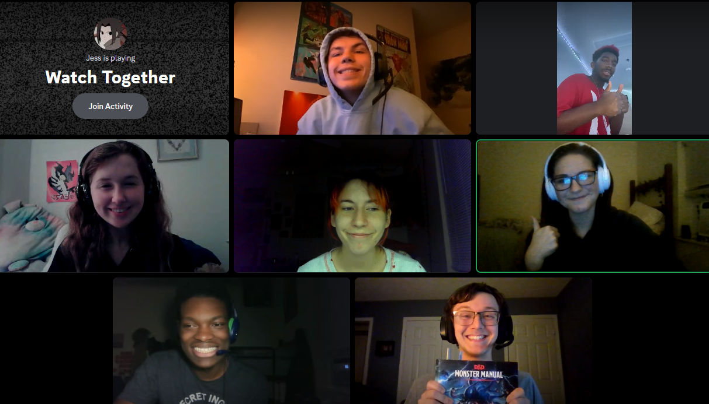
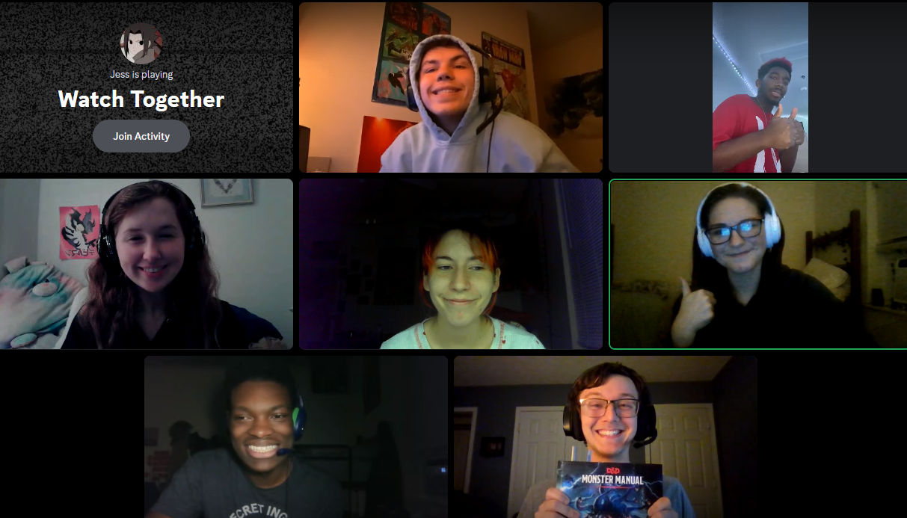

Nineteen Flowers
Can such a uptopia exist?
Nineteen Flowers takes place in Pariton: A recently established city-state founded on a newly dicovered continent. The party was hired from various corners of the world by Dr. Morrow, an excitable scientist seeking relics known as the Flowers, said to be ancient body parts of the God of Death. Morrow intends to use these relics to create a world without death and without loss. But is this truly for the best?
On their quest to gather these relics for Morrow, the party has become heroes of a Triton fishing village, tamed an undead hound, mastered a massive mimic ship, and even bested an undead Hydra. As the stakes and perils increase, so too do the party's doubts as to whether Morrow's intentions are truly for the best...
 

Meet the Characters
Soren
- Axolotl Humanoid
- Fighter
- 16 Years Old
Soren is an outgoing, fun-loving teenager who strives to be a hero and help as many people as he can. His biggest role model is his dad, who is a renowned hero. They planned to join the Flowers crew together, but Soren’s dad has since gone missing. While fulfilling his quest with the party, Soren seeks to reunite with his father.
Jako
- Halfling
- Gloomstalker Ranger
- 19 Years Old
Jako was enlisted in the army at a young age to be a spy. After serving 5 years he left seeking more adventure and joined the Flowers crew. Jako does not dwell on his tough past as his mother, with her dying breath, told him to look to the future with positivity. He has taken a liking to the Flowers crew and is very quick to put his life on the line for his friends.
John
- Human
- Bard
- 30 Years Old
John loves to play music, but is also a very realistic and grounded character.
Merri
- Spucketwice
- Artificer
- 16 Years Old
A nobleman who loves adventure, mmoney, soda, money, meeting new people, and money. Merri creates many different types of sodas and the party has dubbed the name of his company to be MerriWater.
Isla
- Tiefling
- Warlock
- 23 Years Old
Isla has strong bonds to the ocean after living on a ship for the last 20 years of her life. After years of fighter for her place in the world, she is trying to settle in finding a place in the group.
Seraphina
- Tiefling
- Rogue
- 18 Years Old
Seraphina has a very chaotic, gremlin-like personality especially when it comes to money. She has a particular interest in art's monetary value.